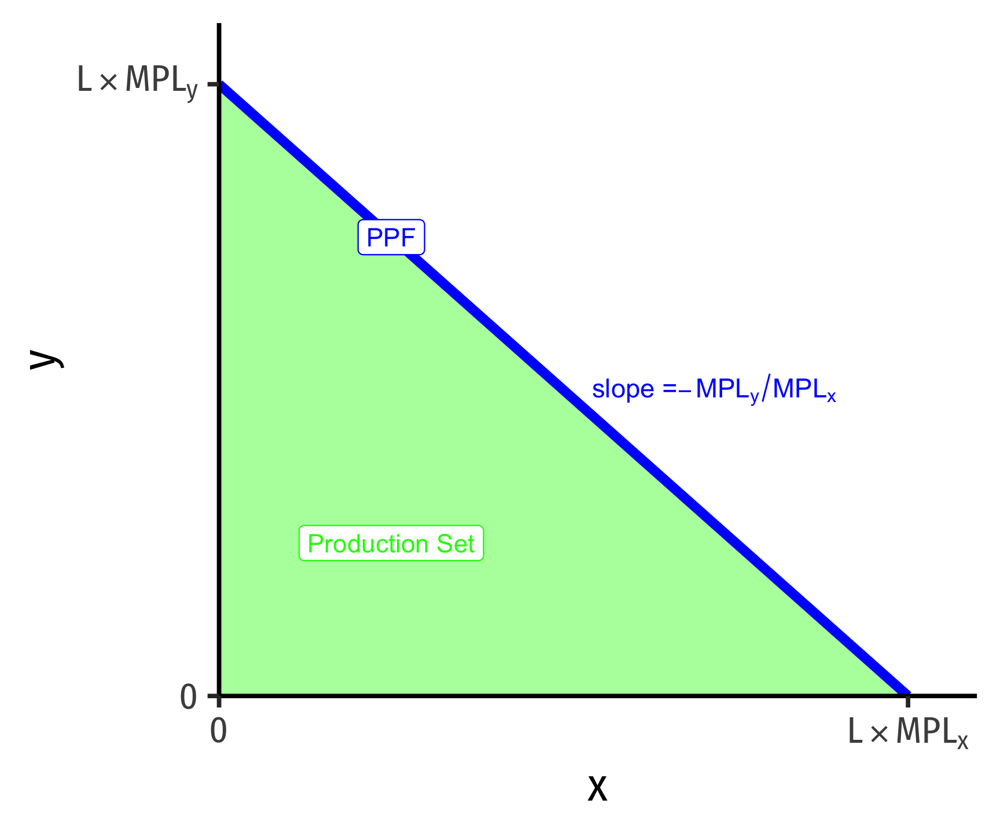

1.4 — The Ricardian View of Trade: One-Factor Model — Class Content
Overview
Today, we dive into a more formal Ricardian model that will ultimately be extended into the modern models of international trade over the coming weeks.
Practice
Today you will be working on practice problems:
Readings
- Chapter 2.1 in Feenstra & Taylor
Note: Feenstra and Taylor dive right into a Ricardian model in Ch. 2 with some advanced features. This throws a lot of moving parts (marginal products of labor, indifference curves, world relative supply and world relative demand curves, export and import curves, etc.) at you very fast. In my experience, and having used different textbooks in the past, is that it is easier if I build more slowly to the full model. This class will be a “simplified Ricardian model” (there is a bit of fudging with marginal products vs. “required labor”) that gets you to see some of the essentials before we layer on additional parts in next class on the “standard” or “neoclassical” trade model.
So if you are reading the textbook, it won’t exactly match up to class for 1-2 weeks 😕
Slides
Below, you can find the slides in two formats. Clicking the image will bring you to the html version of the slides in a new tab. The lower button will allow you to download a PDF version of the slides.
You can type h to see a special list of viewing options, and type o for an outline view of all the slides.
I suggest printing the slides beforehand and using them to take additional notes in class (not everything is in the slides)!
Appendix: Translating Between Textbook and Class
Feenstra and Taylor take an approach that focuses on the marginal product of labor for producing each good. Recall from microeconomics that the marginal product of labor is how much additional output will be produced from adding one more (marginal) worker (or “unit of labor”). In the Ricardian model, the marginal product of labor is assumed to be a constant number, but different for each industry (and across countries). To solve a Ricardian model in this fashion, we need to be told the total supply of workers for each country \((L, L')\), as well as the marginal product of labor in each industry \((MPL_x, MPL_y; MPL'_x, MPL'_y)\), for each country.
Marginal Products of Labor
In class, we used the total supply of labor in each country and the labor required to make 1 unit of each good in each country. \((l_x, l_y; l'_x, l'_y)\).
There is actually an easy clear relationship between these two approaches. The marginal product of labor for each good and the labor required to produce 1 unit of the good are inversely related:
\[\begin{align*} MPL_x &= \frac{1}{l_x}\\ MPL_y &= \frac{1}{l_y}\\ \end{align*}\]
This should make sense. If for example, the marginal product of labor in producing \(x\) is \(MPL_x = 4\), this means that one worker can produce 4 units of \(x\). In order to produce 1 unit of \(x\), you only need \(\frac{1}{4}\) workers.
From here, you can build the PPF equation (which, by the way, they do not do in the book!) as follows:
\[L = \frac{x}{MPL_x}+\frac{y}{MPL_y}\]
This appears less intuitive, but it makes sense. The amount of \(x\) a country makes divided by the amount of \(x\) one worker can make gives the total labor allocation (labor demand) in the \(x\) industry. Do the same for \(y\), and add them together, and you are using the total labor supply \(L\).
PPFs
From here, you can solve for \(y\) to graph:
\[y = L * MPL_y - \frac{MPL_y}{MPL_x} x\]

This gives you a \(y\)-intercept of \(MPL_y * L\), which again should make sense: the most amount of \(y\) a country could produce, it it only produced \(y\), is the total labor supply times the amount of \(y\) each worker can produce.
The slope, however, is very different from what we got \(\left(-\frac{l_x}{l_y}\right)\), here it is \(\left(-\frac{MPL_y}{MPL_x}\right)\), notice the \(y\) term is over the \(x\) term. This is less intuitive than our approach, but it will fundamentally give you the same answer!
\[\frac{MPL_y}{MPL_x} = \cfrac{\left(\frac{1}{l_y}\right)}{\left(\frac{1}{l_x}\right)} = \frac{l_x}{l_y}\]
As an example, let’s take:
For Home:
- \(L=100\)
- \(MPL_x = 1\)
- \(MPL_y = 0.5\)
For Foreign:
- \(L'=100\)
- \(MPL_x = 1\)
- \(MPL_y = 0.25\)
Home’s PPF:
\[\begin{align*} L&=\frac{x}{MPL_x}+\frac{y}{MPL_y}\\ 100&=\frac{x}{1}+\frac{y}{0.5}\\ 100&=x+2y\\ 50-0.5x &= y\\ \end{align*}\]
Foreign’s PPF:
\[\begin{align*} L'&=\frac{x}{MPL_x'}+\frac{y}{MPL_y'}\\ 100&=\frac{x}{1}+\frac{y}{0.25}\\ 100&=x+4y\\ 25-0.25x &= y\\ \end{align*}\]
Which was the same as our PPFs in class!
Absolute Advantage
In Feenstra & Taylor’s method, whichever country has a higher marginal product of labor has an absolute advantage in the production of that good.
| \(MPL_x\) | \(MPL_y\) | |
|---|---|---|
| Home | 1 | 0.5 |
| Foreign | 1 | 0.25 |
Here, neither Home nor Foreign has an absolute advantage in producing \(x\), since they both have the same labor productivity. Home, however, has an absolute advantage in producing \(y\), since it has a higher marginal product of labor in producing \(y\).
Compare to what we did in class, indicating absolute advantage by whomever requires fewer workers to produce a single unit of each good:
| \(l_x\) | \(l_y\) | |
|---|---|---|
| Home | 1 | 2 |
| Foreign | 1 | 4 |
While the numbers will be inverses of the ones from the table above (because marginal product of labor is the inverse of the number of workers required per unit of the good), we still get the same result, because it requires fewer workers in Home to produce \(y\) (2) than Foreign (4).
Comparative Advantage
Comparative advantage proceeds the same for both methods: estimate the opportunity cost of producing each good in each country, and the country that has a lower opportunity cost in a particular good has the comparative advantage in producing that good.